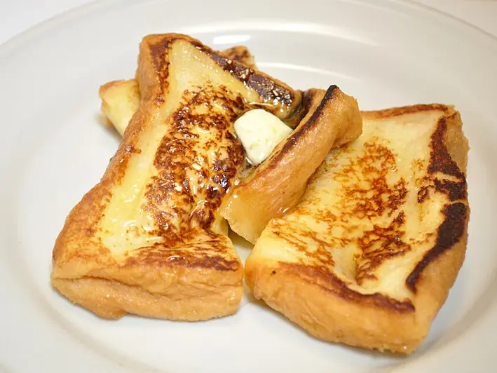

Фото: Ocdp, CC0

Гренки сладкие
Ломтики батона в яично-молочной смеси, обжаренные на масле
15 мин4 порц.279 ккал на порциюБ 9 · Ж 10 · У 36Европейская кухня
Продукты на 4 порц.
- Хлеб белый8 шт
- Молоко150 мл
- Яйцо куриное2 шт
- Сахар1 ст. л.
- Корица по желанию1 щеп.
- Сливочное масло20 г
- Соль1 щеп.
Как готовить
- Нарежьте батон ломтиками толщиной 1,5 см. Вчерашний хлеб подходит лучше свежего.
- Взбейте вилкой яйца с молоком, сахаром, солью и корицей в широкой миске.
- Разогрейте сковороду с половиной масла на среднем огне.
- Обмакните каждый ломтик в смесь на 2-3 секунды с каждой стороны.
- Жарьте по 2 минуты с каждой стороны до золотистой корочки. Добавьте оставшееся масло для второй партии.
- Подавайте горячими с ягодами, мёдом или вареньем.
Совет. Долго не держите хлеб в смеси, иначе он размокнет и порвётся. Для несладких гренок уберите сахар и корицу, добавьте тёртый сыр.